Hello readers,
About 2 months ago, I promised I would start writing down my adventures in the DotNet Blazor development world, which you can read in my first Blazor-related post here.
While that post was more of a “setting the scene” how I ended up in learning Blazor (and C# mainly) and what the differences are between Blazor Server and Blazor WebAssembly, it also listed up the TOP 8 objectives I want to get out of these articles.
Let’s kick it off with the first one, Deploying your first Blazor Server App
Prerequisites
To make sure you are ready to go and follow-along, let me list up some prereqs:
-
Visual Studio IDE
Any flavor of Visual Studio 2019 or later should work (know that 2022 is getting launched Nov 8th…), and depending on your situation, you might already have access to a licensed edition of Standard, Professional or Enterprise from your employer. If not, totally fine, as there is also a free Community Edition available from the link I shared
-
.NET RunTime
In order to run C# and .NET applications, one needs to have the necessary .NET RunTime installed on the development workstation. In a later article, I’ll describe how you can publish Blazor apps to Azure App Services or Containerized workloads, where you will notice the .NET RunTime is required as well. If you are running Visual Studio 2019, install the
.NET 5.0 RunTime; if, like me, you are running Visual Studio 2022 Preview, you can directly go for .NET 6.0
(I’m running Windows 11, Visual Studio 2022 Preview 7.0, which means it could look a bit different on your machine, although most steps will be identical…)
Using Visual Studio IDE to Create a Blazor Server App
Assuming you have all the prereqs covered, you can create your first Blazor Server App by going through the following steps:
- Launch Visual Studio on your machine, and select Create a new Project
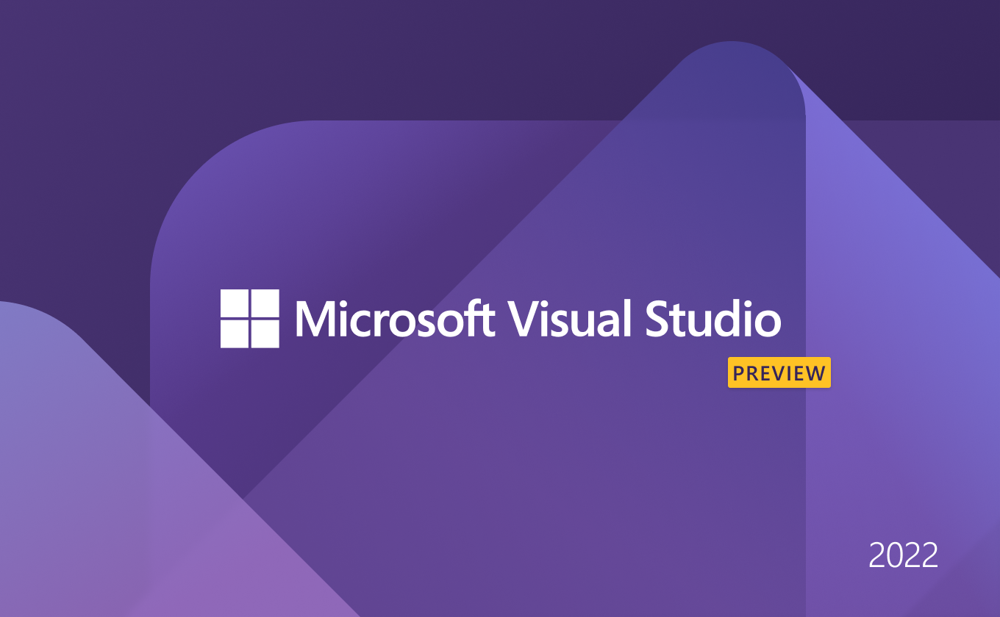
- In the search box, type blazor
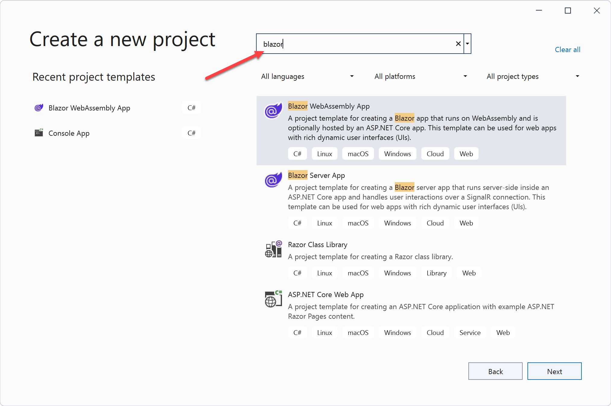
-
Notice there is a different template for a Blazor Server app or a Blazor Web Assembly app; for now, select Blazor Server App + Next
-
In the Configure Your New Project step, set a name for your new project, for example MyFirstBlazorApp, and update the location if needed (Notice how VStudio is by default pointing to your user’s profile directory, creating a sources and repos subfolder structure)
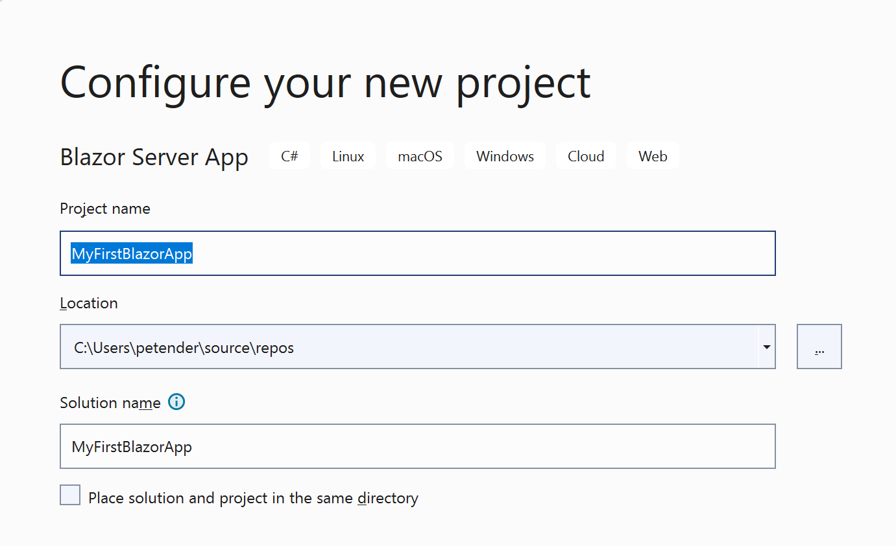
- This brings us to the Additional Information step, where you specify the Framework, which (preferably, but not required…) is the latest .NET 6.0 (Long-Term Support)
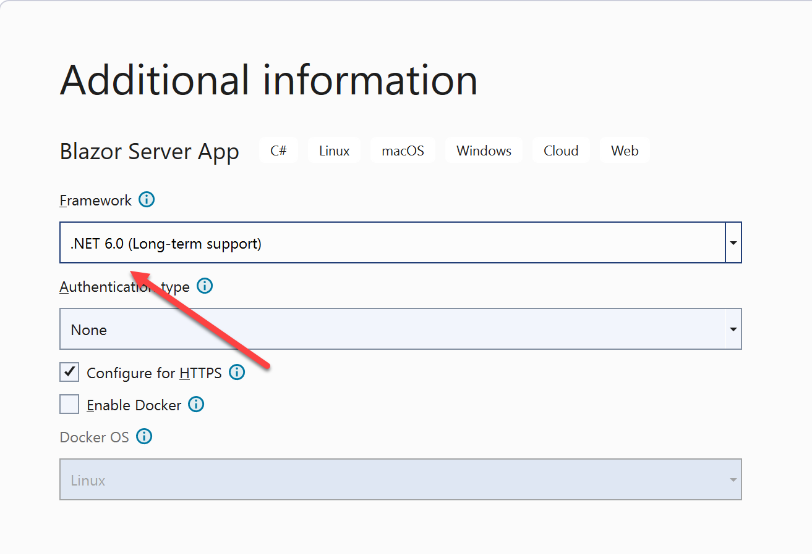
- Confirm by clicking the Create button. After only a few minutes, the new Project got created and is available for “customizing”.
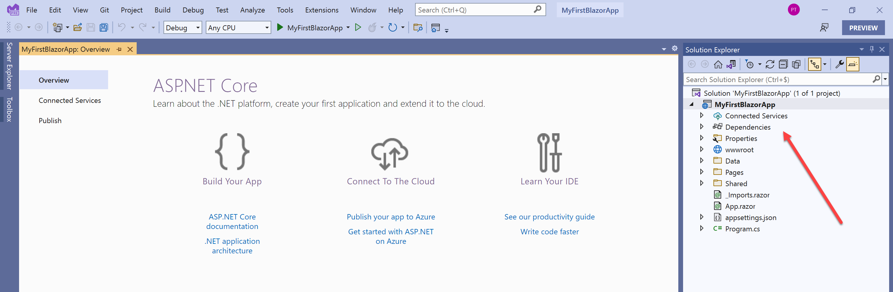
- Before launching the app and see it in action, let’s quickly describe the core application folder/file structure:
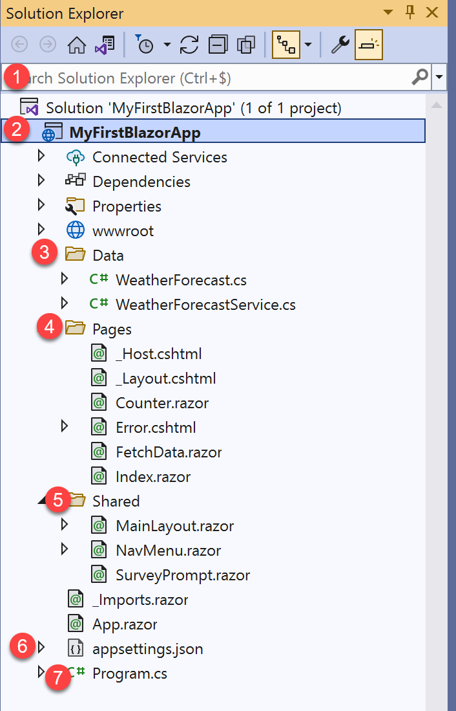
(1). Solution - the way Visual Studio combines all code; a Solution can have a single project or multiple projects
(2). Project - A project is a combination of dev source code, which gets compiled into a workable application (the runtime)
(3). Data - SubFolder, which contains classes, presenting data; in this example, it generates weatherforecast information randomly
(4). Pages - Blazor is using razor-pages, which are resonsible for the actual layout of a web page. It typically has a @page identifier for the actual page, followed by an HTML-code section and an actual C#-code section
(5). Shared - Blazor can share code (pages) between a Server and Web Assembly (Client) project. Those pages will preferably be saved in the Shared folder, to avoid duplicating source code between both
(6). Appsettings.JSON - this file contains application settings to run, for example Logging information, Database Connection Strings, Authentication Keys,...
(7). Program.cs - The actual "core" of the application runtime; this is where you define which services should be used, amongst other coding information where relevant
- Run the sample app (in Debug Mode) by pressing “F5” orby Right-click on the Project / Debug / Run Instance
- This starts running the application on a dynamic browser port in your default browser,
- as well as automatically switching Visual Studio to the Diagnostics and Error blades
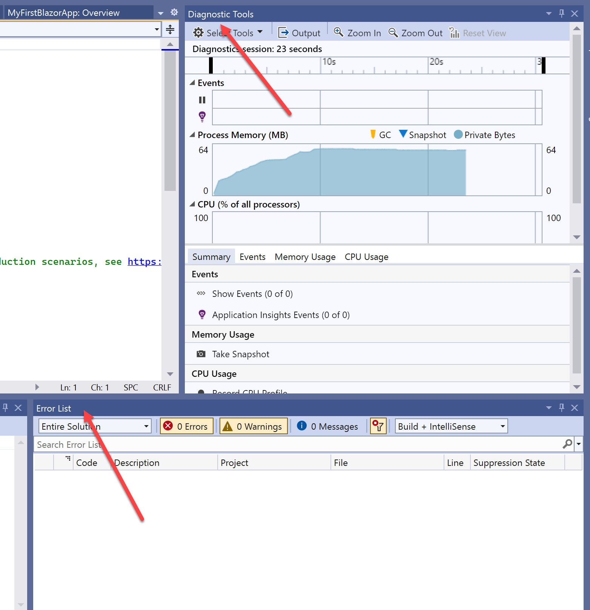
-
The application loads in the browser and shows the layout of the app; feel free to click around the different menu options in the left Navigation Bar and become familiar with the base app functionality
- Navigation Bar is the left menu, which allows you to easily navigate across your application pages
- The middle section is loading a specific razor-page, displaying HTML layout and data (the WeatherForecast information)
- Top Menu bar, currently only having an “About” hyperlink to the .NET website
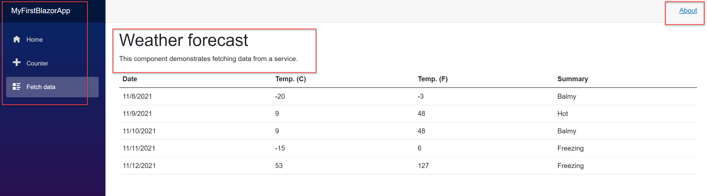
- From the Navigation Bar, select Counter; this opens the “Counter” page, which has a button, responding to each Click, and changing the value of the Current count field.
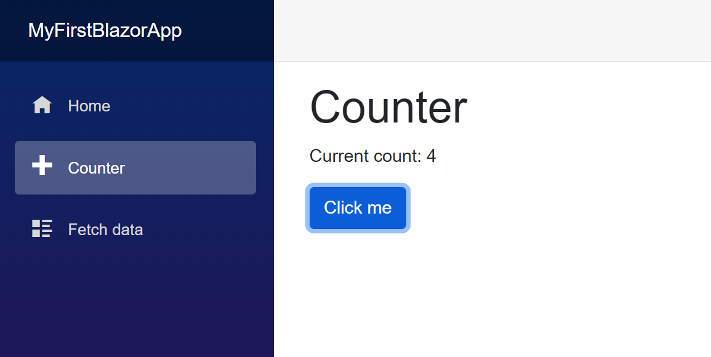
- Switch back to Visual Studio, and open the Counter.razor file, displaying the actual code content. Notice the first section (@page) has a pointer to /counter; this is called a route. (If you would switch back to the browser, you will see that once you select the Counter option in the Navigation Bar, the URL switches to /counter; if you navigate to Fetch Data, the route will switch to /fetchdata, which is loading the FetchData.Razor page file. If you navigate to Home, it’s loading the index.html page from the Pages-directory).
The @code section of the counter.razor page, is where the actual C#-code lives. While it only has a few lines of code here, it actually works fine.
-
The code section
private int currentCount = 0;
specifies the currentCount field to be equal to zero. This happens every time the application is loaded (yes, you can try that out…).
-
The next code section,
private void IncrementCount()
{
currentCount++;
}
is getting triggered whenever the “Click Me” button is getting clicked, because of the @onclick-event specified for the button HTML-object. Followed by a basic C#-code language function “++”, which means, add a value 1 to the current value of the object currentCount.
Easy said, whenever you start the app, the counter value is 0, but gets increased with a value “1”, every time you click the “Click Me” button.
Debugging a Blazor App
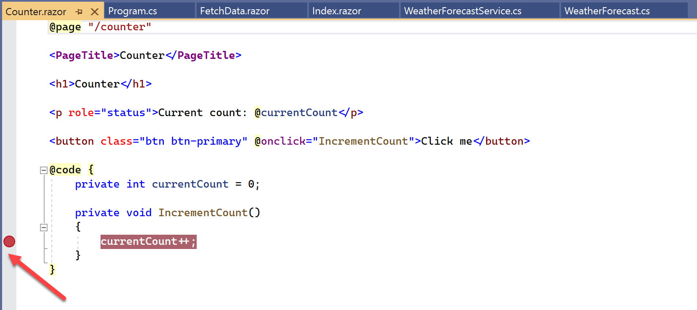
- Since we are in “Visual Studio Debug mode” (I’ll write much more on that in a later article…), let me briefly show you what it allows you to do. In short, it allows you to set a breakpoint, which gets prompted for during the run time of the application. To set a breakpoint, move your mouse pointer to the front of a line of code (or a code section) (the grey bar), and click. This adds a red dot, which reflects the breakpoint.
From here, switch back to the application in the browser, and click the “Click Me” button again in the Counter page. Notice how you get brought back into Visual Studio, where the breakpoint got updated with a yellow arrow, identifying where you are in the debugging (we only have 1 breakpoint for now, but very convenient if you have several of those set…). It will also show the actual value of the CurrentCount in a little popup balloon message, as well as below in the Autos section
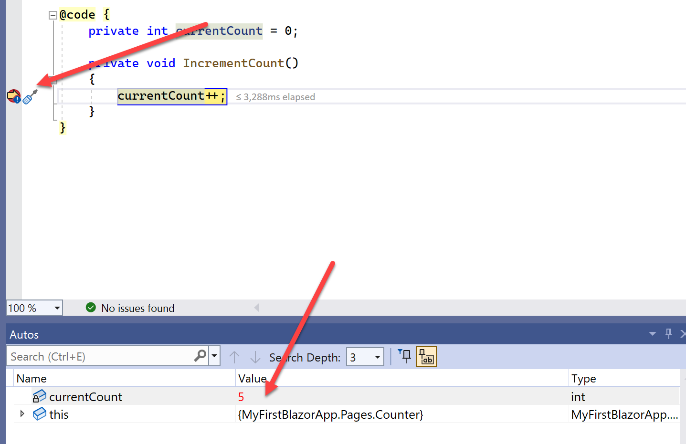
-
Quit Debugging-mode by pressing Shift-F5, or by clicking the Stop button (red square button in the top menu) in Visual Studio, or by closing the browser that’s running the Blazor app.
-
Last, clear the Breakpoint in Visual Studio by clicking on it again.
Summary
In this post, I introduced you to creating your First Blazor Server App, using the Visual Studio template for this application type. I described the core folder/file structure of your Blazor Project, as well as explaining some of the base concepts of razor pages. You learned how to run your application, as well as using the basics of debugging, by setting a breakpoint and validating the outcome.
In a next Blazor-related post, I’ll walk you through some fundamental layout customization options, changing the look and feel of the navigation bar, the top bar and the actual web app pages themselves by introducing HTML and CSS primarily.
Btw, if you are interested in developing with Blazor, you can hire a Blazor developer from Toptal, a leading platform for connecting top-tier developers with clients.
For now, take care of yourself and your family, see you again soon with more Blazor-news.

Cheers, Peter